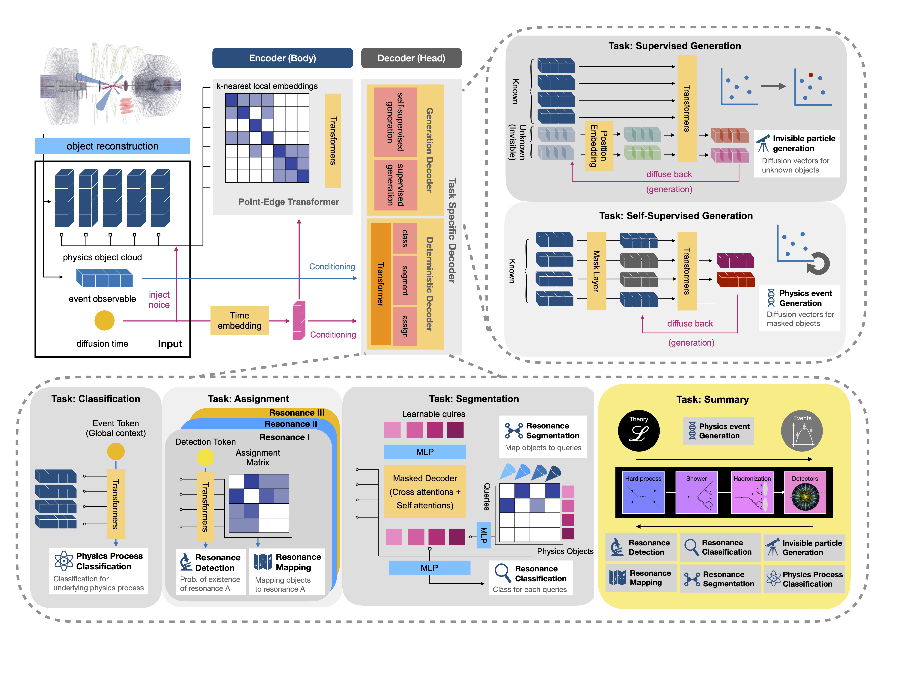

🧠 Model Architecture Tour¶
Take a guided walk through EveNet’s multitask architecture—from input normalization to the specialized heads. Pair this with the configuration guide to see how YAML choices shape each component.
- Signal flow at a glance
- Input normalization
- Shared body
- Task heads
- Progressive training hooks
- Customizing the network
🔁 Signal Flow at a Glance¶

Inputs are split into point-cloud tensors and global per-event features. Explicit supervision arrives through the target nodes shown on the right, while the reconstruction head trains against the noisy point-cloud inputs it perturbs. Each module in the flow is instantiated inside evenet/network/evenet_model.py using the options loaded from your YAML files. The optional global-diffusion network is configured separately and conditions on the same normalized scalars.
🧴 Input Normalization¶
When EveNetModel is built, it grabs feature statistics from normalization.pt plus schema details from event_info and constructs a collection of Normalizer layers:
- Sequential features (
INPUTS/Source) use aNormalizerthat understands mixed discrete/continuous distributions and optional inverse-CDF indices. - Global features (
INPUTS/Conditions) map through a secondNormalizersized to the event-level vector. - Multiplicity channels (
num_vectors,num_sequential_vectors) are normalized when generation heads are active. - Invisible particle targets reuse the sequential embedding width and are padded to
max_neutrinosso diffusion heads can operate consistently whenever truth-level supervision is available.
Implementation details live near the top of evenet/network/evenet_model.py.
🧱 Shared Body¶
🌐 Global Embedding¶
GlobalVectorEmbedding converts the condition vector into learned tokens. Hyperparameters like depth, hidden dimension, dropout, and activation come from the Body.GlobalEmbedding block described in the configuration reference.
🧲 PET Body¶
PETBody processes the sequential particle cloud with transformer-style layers, local neighborhood attention, and optional stochastic feature dropping. Configure num_layers, num_heads, feature_drop, and local_point_index under Body.PET in your network block (see configuration reference).
🧵 Object Encoder¶
Outputs from the PET body and global tokens meet in the ObjectEncoder, which mixes information across objects. Attention depth, head counts, positional embedding size, and skip connections are controlled by Body.ObjectEncoder (see configuration reference).
🎯 Task Heads¶
Heads are instantiated only when options.Training.Components.<Head>.include is true. EveNet groups them into discriminative predictors that score events and objects, and generative heads that either reconstruct their own inputs or learn diffusion processes against explicit supervision.
🔍 Discriminative Heads¶
🏷️ Classification¶
Predicts process probabilities using ClassificationHead. Configure layer counts, hidden size, dropout, and optional attention under Classification in the network YAML (see configuration reference).
📈 Regression¶
RegressionHead regresses continuous targets (momenta, masses). Normalization tensors (regression_mean, regression_std) are injected so outputs can be de-standardized. Hyperparameters mirror the classification head (see configuration reference).
🔗 Assignment¶
SharedAssignmentHead tackles combinatorial matching between reconstructed objects and truth daughters defined in event_info. It leverages symmetry-aware attention and optional detection layers. Tune feature_drop, attention heads, and decoder depth via the Assignment block (see configuration reference).
🌈 Segmentation¶
SegmentationHead predicts binary masks for resonance-specific particle groups. Configure the number of queries, transformer layers, and projection widths in the Segmentation block (see configuration reference).
🌬️ Generative Heads¶
Two sibling diffusion heads branch off from the shared body, each with a distinct training objective, plus an optional standalone module for scalar generation:
| Head | Objective type | Input features | Supervision | Notes |
|---|---|---|---|---|
ReconGeneration |
Self-supervised reconstruction | PET embeddings + global tokens before the object encoder. | No external targets—the head denoises the noisy visible point-cloud channels it perturbs. | Shares the PET backbone directly so reconstruction quality reflects the sequential encoder capacity. Configure under ReconGeneration. |
TruthGeneration |
Supervised generation | PET embeddings + global tokens with optional invisible padding. | Padded invisible particle features (e.g., neutrinos) supplied in the dataset. | Mirrors the reconstruction architecture but learns to sample toward truth-level targets. Settings sit under TruthGeneration. |
💡
GlobalGenerationremains available as an independent diffusion network for event-level scalars. It conditions on the normalized global tokens but does not connect through the PET/ObjectEncoder stack, so you can enable or disable it without affecting the primary generative heads.
🌀 Progressive Training Hooks¶
EveNetModel exposes schedule_flags describing which heads are active (diffusion, neutrino, deterministic). The training loop combines these flags with the curriculum defined in options.ProgressiveTraining so that loss weights, dropout, EMA decay, or teacher-forcing gradually adjust across stages. Inspect the scheduling logic in evenet/network/evenet_model.py and pair it with the YAML stages summarized in the configuration reference.
🛠️ Customizing the Network¶
- Pick a template – choose a network block described in the configuration reference and copy it into your experiment YAML.
- Override selectively – in your top-level YAML, override only the fields you want to tweak (e.g., set
Body.PET.feature_drop: 0.0for fine-tuning). - Match supervision – enable heads under
options.Training.Componentsonly when the dataset provides the required targets. - Refresh normalization – if you change the input schema in
event_info, rerun preprocessing so new statistics land innormalization.pt(see the saving logic inpreprocessing/postprocessor.py).
With these controls, you can resize EveNet for tiny studies or scale it up for production campaigns—all while keeping the codepath consistent.